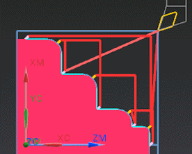

Split the tool path when machining fillets between a face and diameter
-
In the Path Settings group, from the Cut Fillets list, select Split.
-
In the Actions group, click Generate
 .
.
-
Click Verify
 and view the tool path as you did before.
and view the tool path as you did before.
Half of the fillet is cut when cutting the adjacent face and the other half of the fillet is cut when cutting the adjacent diameter.

-
Click OK to complete the tool path visualization.
-
Click OK to complete the operation.
-
Close the part without saving it.